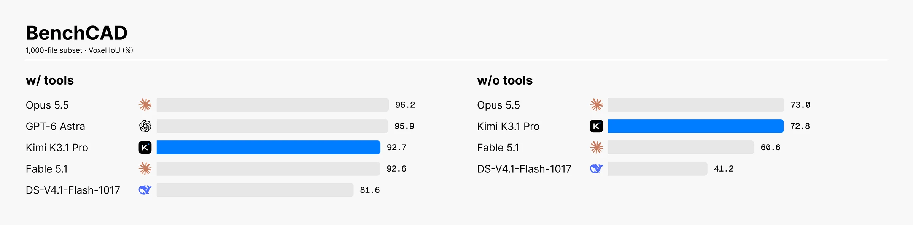

观察区间：2026 年 10 月 19–25 日｜上海时间
这周最该留意的是几家模型厂商直接交出了新版本：Moonshot 发布 Kimi K3.1 Pro，Artificial Analysis 给出 55 分；MiniMax 推出 M3.1 Flash，独立指数从前代的 29 升至 42。美国厂商同步推进智能体和推理基础设施；欧洲的 Mistral 发布了面向实时语音代理的 Voxtral 3。以下把厂商自测与独立评测分开列出，避免只看单一榜单。
一周速览
| 地区 | 关键进展 | 看点 |
|---|---|---|
| 美国 | Anthropic 推出 Claude Duet；AWS、Google 开放芯片 PyTorch 后端；NVIDIA 扩展本地模型 | 智能体体验与模型运行基础设施一起演进 |
| 中国 | Kimi K3.1 Pro：独立指数 55；MiniMax M3.1 Flash：独立指数 42；DeepSeek 开源 DeepInfer | 前沿模型、低成本智能体与开放推理工程并进 |
| 欧洲 | Mistral 发布 Voxtral 3 语音模型与智能体 SDK | 把听、推理、调用工具和说整合进实时语音流程 |
厂商进展
美国
- Anthropic｜Claude Duet 研究预览（10 月 21 日） 一个运行在独立虚拟机中的个人代理，可读取连接的应用，早晨汇总待办、邮件与日程，并在出现需要处理的事项时提醒用户。它在发送消息、付款或删除内容前会请求确认。Duet 使用 Claude Opus 5.5，属于产品和代理工作流更新，不是新基础模型；目前仍是候补名单研究预览。(Anthropic 产品说明（在新标签页打开）)
- NVIDIA｜Nemotron 3.5 与本地代理模型（10 月 15、23 日） Super VL 是 120B 模型，官方公布 120B 总参数、12B 激活参数，定位于视觉与长期运行的代理；Bolt 74B-A9B 面向 24GB 显存设备，Bolt E4B 面向约 4GB 本地语音代理。NVIDIA 宣称 Super VL 在同级任务上最高快 5 倍，属于厂商口径；这组发布体现的是从数据中心视觉代理到本地语音代理的部署跨度。(NVIDIA 发布说明（在新标签页打开）)
- OpenAI｜模型与 Codex 工作流进入 Google Cloud（10 月 21 日） OpenAI 前沿模型和 Codex 智能体工作流开始进入 Google Cloud Model Garden，先向部分企业客户开放预览。企业可通过 Google Cloud Marketplace 使用这些服务。此举扩展了 OpenAI 模型的云分发渠道；公告同时说明微软仍是 OpenAI 的主要云合作伙伴。(OpenAI 公告（在新标签页打开）)
- OpenAI｜收购 Orchestra Bio（10 月 20 日） Orchestra Bio 提供协调生物制药研发流程的平台，OpenAI 计划将其与 Rosalind 等生命科学工具结合，协助团队管理药物研发项目。此次收购着重整合研发工作流与团队协作工具。(OpenAI 公告（在新标签页打开）)
- Meta｜“薄编排器”智能体架构（10 月 19 日） Meta 分享一种把职责拆开的生产系统设计：中央编排器负责步骤调度和可靠性检查，专业智能体处理领域推理。Meta 称，过去把过多职责交给大型模型会带来生产环境中的幻觉；固定规则的轻量编排器更容易控制。其内部案例中，新栏目准备时间从人工的 3–4 天缩短到 1 小时以内，约三分之二的变更无需大量人工修改。上述数据来自 Meta 内部案例，独立评估仍待补充。(Meta Engineering（在新标签页打开）)
- NVIDIA｜Nemotron、Cosmos 等开放模型在欧洲产业中的布局（10 月 21 日） NVIDIA 在 GTC Berlin 介绍 Nemotron 3.5 Super VL、Bolt、Retriever，结构化业务数据模型 Kumo、世界模型 Cosmos 3.5，以及自动驾驶、生命科学和量子计算相关模型。公司将其定位为可供企业部署和定制的开放模型组合；具体能力仍应按各模型卡与独立评测分别判断。(NVIDIA 模型组合说明（在新标签页打开）)
- NVIDIA｜模块化 AI 工厂 DSX POD（10 月 21 日） 在柏林公布的参考设计把 Vera Rubin AI 工厂整合进模块化机房，由合作伙伴提供组件。NVIDIA 称，在场地已准备好的条件下，部署周期可由约 6 个月缩短至最快 14 天，预计 2027 年初可用。上述时限为厂商目标，实际交付表现仍待验证。(NVIDIA 公告（在新标签页打开）)
中国
- 阿里 Qwen｜QwenGyre 论文修订（10 月 20 日） 这是长程在线强化学习框架，不是新模型发布。它在模型执行环境任务时动态分配 GPU 生成轨迹或训练，并压缩分支轨迹中的重复路径。论文在 Qwen 3.8 2.4T、每条轨迹 700K token 的设置下，报告 NL2RepoBench 从 52.5% 提升至 58.5%（48 步），相对 Colocate 和 Async 最高分别提速 1.85 倍、1.78 倍。(arXiv 论文 v2（在新标签页打开）)
- 月之暗面｜Kimi K3.1 Pro（10 月 23 日） 这是 K3.1 系列首款模型。Moonshot 称其为 2.8T 总参数、104B 激活参数的混合专家模型（MoE，每个 token 只调用部分参数），上下文为 1M token。Artificial Analysis 综合指数得 55 分，在该机构 709 个模型中列入前 27；该指数 v4.3.2 汇总 10 项评测。模型已可通过 Kimi 产品和 API 使用，完整权重计划于 11 月 4 日发布。(Kimi 技术博客（在新标签页打开），Artificial Analysis 独立比较与方法（在新标签页打开）)
| Kimi K3.1 Pro 评测 | 成绩 | 比较与归因 |
|---|---|---|
| Artificial Analysis Intelligence Index | 55 | 独立评测的 10 项任务综合分 |
| Artificial Analysis Terminal-Bench 4.0 | 67% | GPT-6.1 Sol Max 为 56%；该页面指标，采用其自身评测口径 |
| Kimi 发布页 Terminal-Bench 4.0 | 65.7% | Opus 5.5 为 66.4%，GPT-6 Astra 为 58.2%；Kimi 使用 Claude Code harness，竞品分数来自官方资料或榜单，条件未完全统一 |
| Kimi Code Bench 3.0 长程编码 | 61.2 | K3 为 55.95；Kimi 内部评测 |
| BenchCAD 多视角重建（带工具） | 92.7% | Opus 5.5 为 96.2%，GPT-6 Astra 为 95.9%；Kimi 官方在 1,000 例子集测得 |
这几项分别衡量综合能力、终端编程、长程编码和 3D 重建，测试环境也不同，适合分项查看。(Kimi 技术博客（在新标签页打开），Artificial Analysis 指数页（在新标签页打开）)

- MiniMax｜M3.1 Flash（10 月 19 日） 模型通过更激进的稀疏化提高推理效率。MiniMax 报告中位输出速度超过 170 token/s，代理任务成本比前代低 70%；公布的基准包括 DeepSWE v1.1 73.7%、OSWorld V2 61.7、BankerToolBench 76.2、CyberGym 82%、Agents’ Last Exam 29.6，均为厂商测评。Artificial Analysis 对周度综述提供的快照记录指数 42；其现行模型页显示 43，任务成本约 0.22 美元。该差异可能来自页面更新时间或分数取整，报告保留两个来源读数。API 标价为输入每百万 token 0.15 美元、输出 0.60 美元、缓存输入 0.015 美元；官方称权重稍后发布，当时可通过 API、M Plan 和 MiniMax Code 使用。(MiniMax 发布说明（在新标签页打开），Artificial Analysis 当前模型页（在新标签页打开），AI Atlas 周度快照（在新标签页打开）)
- DeepSeek｜开源 DeepInfer 推理框架与 deepseek-recipe（10 月 20 日） DeepSeek 表示，DeepInfer 正在为 V4.1 Flash 提供高吞吐、低延迟服务，并公开其生产推理组件。官方帖提及高性能算子、分布式推理、推测解码、SWA Bounded Replay 和结构化输出；同时开源负责 token 编解码的 deepseek-recipe。开源推理栈让部署方有机会检查和优化服务实现，但实际成本、能耗和延迟仍取决于硬件与配置。(DeepSeek 官方公告（在新标签页打开），组件说明（在新标签页打开）)
- DeepSeek｜V4.1 Flash 1017 的 ARC-AGI 测试成绩（10 月 23 日） ARC Prize 公布的验证结果为 ARC-AGI-2 78.1%，每题成本 0.16 美元；ARC-AGI-1 为 94.5%，每题 0.06 美元。ARC Prize 还列出 Flash 系列在 ARC-AGI-2 上从 V4 Flash 0731 的 61.4%，升至 V4.1 Flash 的 72.9%，再到 1017 版的 78.1%。分数与成本均对应 ARC Prize 的这组任务和评测设置。(ARC Prize 原帖（在新标签页打开）)
- 政策｜中国商务部回应美国联邦机构移除 DeepSeek（10 月 20 日） 美国联邦公报刊载针对联邦民事行政部门 IT 系统的移除要求，覆盖 DeepSeek 服务及使用相关实现的第三方产品。适用范围为联邦民事行政部门的系统采购与使用。中国商务部表示强烈不满和反对，称中国企业提供安全可靠服务并遵守当地法律。(美国《联邦公报》（在新标签页打开），中国商务部答问（在新标签页打开）)
- 政策｜推动 AI 与制造业、商贸流通融合（10 月 19 日） 中国九部门发布相关意见，提出推动人工智能用于产品设计、生产、营销、供应链及智能商品，发展工业大模型、边缘智能与柔性制造。这些措施提出了产业应用方向，规模化落地情况仍需后续观察。(北京市科委转载的政策全文（在新标签页打开）)
欧洲
- Mistral｜Voxtral 3 实时语音代理（10 月 20 日） 发布语音识别、语音合成模型和代理 SDK，把听、理解、工具调用与语音回复接入同一条实时流式管线。识别支持 50 多种语言；合成支持 35 多种语言及 50 多种方言。Mistral 主张语音可经欧盟托管 API 处理，也可自行部署，便于控制数据留存位置；这些是产品规格与部署选择，尚非独立能力评测。(Mistral 发布说明（在新标签页打开）)
- 欧洲基础设施动态 NVIDIA 在 GTC Berlin 发布的模型组合与 DSX POD 参考设计是美国公司面向欧洲产业的部署方案，不是欧洲本土厂商的模型发布。(NVIDIA 模型组合（在新标签页打开），DSX POD（在新标签页打开）)
技术与能力进化
- 推理栈成为模型竞争的一部分 DeepSeek 把生产服务框架与 token 编解码组件开放出来；Google 则宣布 vLLM、SGLang 可通过 TorchTPU 原生 PyTorch 后端使用 TPU。Google 提到 KV 缓存（复用已计算的注意力键和值）、推测解码、长上下文、预填充与解码分离，以及低精度量化等支持，并引用 SemiAnalysis InferenceX 与合作方部署数据。相关性能结论适用于公告引用的模型、硬件与测试设置。(Google 开发者公告（在新标签页打开）)
- Kimi 的提升来自后训练与长程强化学习工程 Kimi 说明 K3.1 Pro 是在 K3 上增加后训练算力，并优化强化学习框架、长上下文推理、沙盒和轨迹调度。厂商用 167 个任务和 420 次独立审查作示例，称模型修正了人体步态模拟器中的 36 处肩部肌肉力臂错误，使模拟从数秒内跌倒改善到连续行走 11.2 秒。这是公司展示的内部任务；它能说明长程调试案例，不能替代独立复现。(Kimi 技术博客（在新标签页打开）)
- 模型分数要和成本、速度、任务边界一起看 Kimi 在 Artificial Analysis 综合指数为 55，但该榜每项任务成本约 2.11 美元；MiniMax 为 42，约 0.22 美元/任务。它们并非同一能力等级的简单排序：Artificial Analysis 指数覆盖 10 项任务，Kimi 的价格、输出 token 与单任务时长也不同。MiniMax 的 170 token/s 是厂商报告的中位输出速度，不是 AA 的同一测试指标。(Artificial Analysis Kimi 指数与任务成本（在新标签页打开），AI Atlas 对 M3.1 Flash 的评测汇总（在新标签页打开）)
- 语音代理是系统能力，不只是更自然的 TTS Mistral 的 Voxtral 3 把多语种识别、轮次判断、推理、工具调用和语音合成串入实时 SDK；Claude Duet 则把代理放入隔离环境并设置付款、删除等确认点。两者分别展示语音接口与个人工作流代理的系统设计重点。
- 统一管理混合模型的缓存与状态 SGLang 提出 Unified Memory 层，把注意力模型的 KV cache 与循环模型状态纳入统一内存管理。项目团队在 RTX 5090、Qwen3.5-4B 的缓存压力测试中报告，可保留的前缀数从 10 个增至 19 个；重复查询完成时间从 4.105 秒降至 2.548 秒。这是项目方给出的特定实验结果，显示服务系统需要同时管理不同类型的模型状态。(SGLang 技术说明（在新标签页打开）)
- 交互式多模态服务从“轮次”走向全双工 SGLang 的 Omni Interactive Runtime 旨在统一承载原生全双工模型（允许输入与输出同时进行）、轮次式模型和级联模型，让语音或多模态交互不用为每种模型重建服务基础设施。其设计也留下一个开放问题：交互能力应由模型学习多少、由运行时编排多少。(SGLang 说明（在新标签页打开）)
- 编排器变薄，专业智能体变专 Meta 的经验是把流程控制、重试与一致性检查放在确定性组件中，避免让一个大模型同时承担调度和领域推理。这类分工把可靠性问题从“再加提示词”转到更容易观察和测试的系统设计上；是否适合某个产品，仍要看任务的容错和验证机制。
- 开放模型与工厂化交付并行 NVIDIA 在同一场 GTC Berlin 既发布模型组合，也提出预制化 AI 工厂。行业竞赛因此不只看模型分数，还看企业能否获得算力、把模型部署在本地，并承担持续推理成本。其部署时限和效率数字仍是 NVIDIA 的目标或估算。
重要论断与我的判断
编辑观察：AI 的实际表现越来越依赖模型与推理引擎、缓存、编排器及算力设施的配合。
- Sam Altman｜安全工作必须跟上能力变化 Altman 在 X 上欢迎 Aleksander Madry 回到 OpenAI，称面对超级智能时，安全与安保挑战很大，Madry 的经验适合承担这项工作。他表达了对安全挑战的判断，帖子未给出风险的量化估计。(Altman 原帖（在新标签页打开）)
- Demis Hassabis｜把 AGI 时间窗口收窄到 2–3 年 在《华尔街日报》专访中，Hassabis 将此前 3–5 年的预测更新为 2–3 年，并称目前系统很强，但未来一两年的系统会更强。这是 Hassabis 的个人预测。他同时谈到 AI 在科学、医学中的潜力，以及安全地将 AGI 带入社会的目标。(WSJ 专访视频及文字稿（在新标签页打开），时间窗口报道（在新标签页打开）)
- 我的判断 本周最实在的进展，是模型服务工程公开化、基准分数继续提升，以及多智能体系统开始把协调责任交给更可控的运行时。AGI 时间表依旧是观点；Meta、Google、SGLang 与 NVIDIA 给出的效率数据也各有特定条件。后续应继续看独立复现、真实任务完成率、单位任务成本和部署可靠性。
延伸阅读
- DeepSeek：DeepInfer 开源公告（在新标签页打开）
- ARC Prize：DeepSeek V4.1 Flash 1017 基准成绩（在新标签页打开）
- Meta Engineering：薄编排器智能体架构（在新标签页打开）
- Google：vLLM 与 SGLang 在 TPU 上的 PyTorch 推理（在新标签页打开）
- OpenAI：模型与 Codex 工作流进入 Google Cloud（在新标签页打开）
- 中国商务部：回应美国对 DeepSeek 的联邦系统移除要求（在新标签页打开）
- NVIDIA：GTC Berlin 开放模型组合（在新标签页打开）
- SGLang：Unified Memory（在新标签页打开）
- Kimi：K3.1 Pro 技术报告与基准数据（在新标签页打开）
- Artificial Analysis：Kimi K3.1 Pro 独立评测与方法（在新标签页打开）
- MiniMax：M3.1 Flash 基准、价格与模型说明（在新标签页打开）
- Mistral：Voxtral 3 语音代理 SDK（在新标签页打开）
- Anthropic：Claude Duet 产品说明（在新标签页打开）
- AI Atlas：10 月 19–25 日周度综述（在新标签页打开）
来源说明：本期已检索并阅读厂商公告、项目技术说明、政策文件、ARC Prize 独立基准帖及负责人公开发言。正文将厂商披露的性能和部署目标标作厂商自述；基准成绩注明测试范围；观点与编辑判断分开呈现。相关 X 原帖链接已附在 DeepSeek、ARC Prize 和 Sam Altman 条目中。